📑 Table of Contents
- 01 It's All About Components
- 02 JSX & React Components
- 03 Creating Custom Components
- 04 Dynamic Values in JSX
- 05 Dynamic Attributes & Image Loading
- 06 Component Reusability & Props
- 07 Project Structure & Separate Files
- 08 The children Prop
- 09 Reacting to Events
- 10 Passing Functions as Props
- 11 Custom Parameters to Handlers
- 12 Managing State with useState
- 13 Deriving Data from State
- 14 Conditional Rendering
- 15 CSS Styling & Dynamic Styling
- 16 Outputting Lists Dynamically
- 17 Mini-Project: Interactive Tab Viewer
- 18 Interview Q&A
It's All About Components
React is a component-based UI library. Instead of building one monolithic page, you decompose your interface into small, self-contained building blocks called components. Each component owns its markup, styling, and logic — and can be composed together like LEGO pieces to form complex UIs.
Why Components?
- Reusability — Write once, use everywhere. A Button component works on every page.
- Separation of Concerns — Each component handles its own rendering and behavior.
- Composability — Components nest inside other components, forming a tree.
- Maintainability — Small, focused units are easier to test, debug, and refactor.
Component Tree
React applications form a component tree. The root component (typically App) sits at the top, and every other component is a descendant. Data flows down via props, and events flow up via callbacks.
// The simplest React component — a function returning JSX
function App() {
return (
<div>
<h1>My App</h1>
<Header />
<MainContent />
<Footer />
</div>
);
}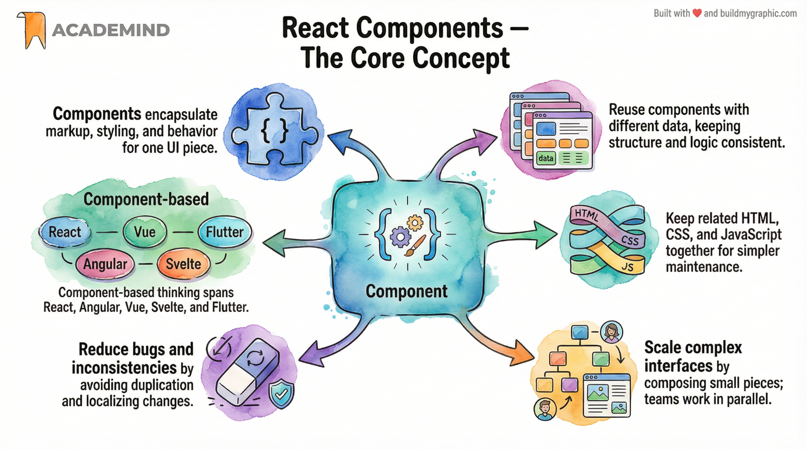
JSX & React Components
JSX (JavaScript XML) is a syntax extension that lets you write HTML-like markup inside JavaScript. It is not a string template — JSX compiles to React.createElement() calls under the hood, producing real JavaScript objects.
JSX vs. HTML — Key Differences
- class → className (reserved keyword in JS)
- for → htmlFor
- Self-closing tags must close: <img />, <br />
- Inline styles use camelCase: backgroundColor not background-color
- Event handlers use camelCase: onClick not onclick
// JSX is compiled to React.createElement calls
// What you write:
const element = <h1 className="title">Hello</h1>;
// What React compiles it to:
const element = React.createElement(
'h1',
{ className: 'title' },
'Hello'
);Expressions in JSX
Use curly braces {} to embed any JavaScript expression — variables, function calls, ternaries, or arithmetic.
const user = { name: 'Alice', age: 28 };
function Profile() {
return (
<div>
<p>Name: {user.name}</p>
<p>Age: {user.age}</p>
<p>Next year: {user.age + 1}</p>
<p>Status: {user.age >= 18 ? 'Adult' : 'Minor'}</p>
</div>
);
}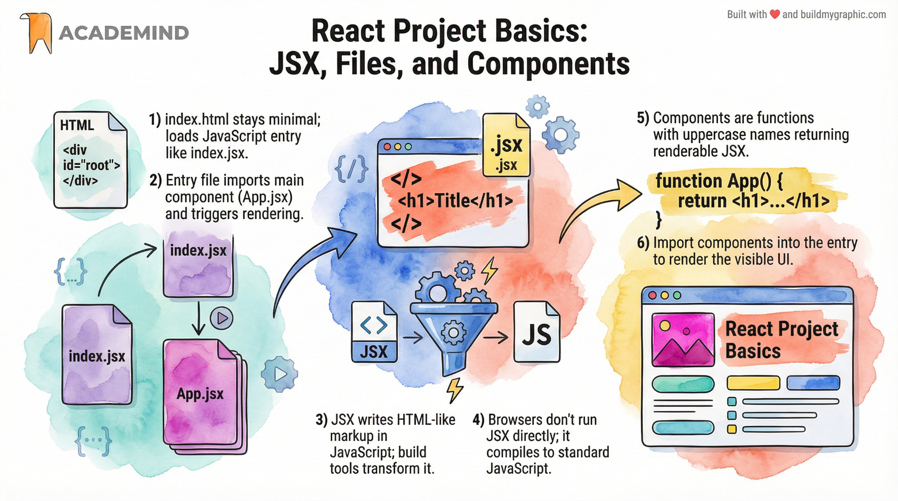
Creating & Using a First Custom Component
Creating a custom component in React is as simple as writing a JavaScript function that returns JSX. This function becomes a reusable tag you can use anywhere in your application.
Step-by-Step
- Define a function with a PascalCase name.
- Return JSX from that function.
- Use the component as a tag: <MyComponent />
// Step 1: Define the component
function CustomButton() {
return (
<button className="btn">Click Me</button>
);
}
// Step 2: Use it inside another component
function App() {
return (
<div>
<h1>Welcome</h1>
<CustomButton />
<CustomButton />
</div>
);
}Arrow Function Syntax
// Arrow function form (equivalent)
const CustomButton = () => {
return <button className="btn">Click Me</button>;
};
// Implicit return (for simple components)
const Logo = () => <img src="logo.png" alt="Logo" />;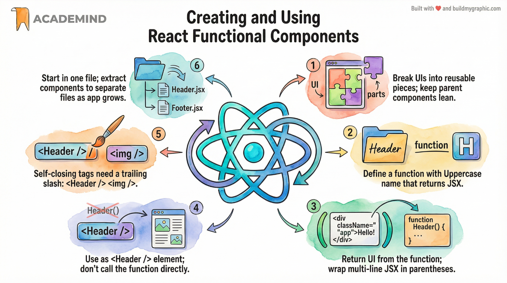
Dynamic Values in JSX
JSX is not a static template — it's JavaScript. You can inject dynamic values anywhere using {} curly braces. This is what makes React UIs truly reactive: when values change, the UI updates automatically.
Where Can You Use Dynamic Values?
- Between tags: <h1>{title}</h1>
- In attributes: <img src={imageUrl} />
- In styles: style={{ color: textColor }}
- In expressions: {count + 1}, {items.length}
function Product() {
const title = 'React Course';
const price = 49.99;
const discount = 0.2;
const finalPrice = price * (1 - discount);
return (
<div>
<h2>{title}</h2>
<p>Original: ${{price}}</p>
<p>Final: ${{finalPrice.toFixed(2)}}</p>
<p>Savings: {(discount * 100)}%</p>
</div>
);
}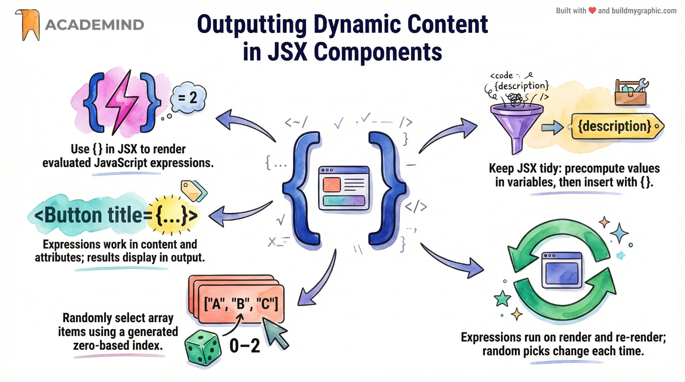
Dynamic Attributes & Image Loading
Attributes in JSX can also receive dynamic values. This is essential for image sources, dynamic CSS classes, ARIA labels, and any prop that varies at runtime.
Dynamic Image Sources
When referencing local images stored in your project's src/ folder, you must import them so the bundler (Vite/Webpack) processes and includes them in the output.
// Importing a local image asset
import reactImg from './assets/react-core-concepts.png';
function Hero() {
const altText = 'React Core Concepts';
return <img src={reactImg} alt={altText} />;
}Dynamic classNames
function NavItem({ label, isActive }) {
return (
<li className={isActive ? 'nav-active' : 'nav-item'}>
{label}
</li>
);
}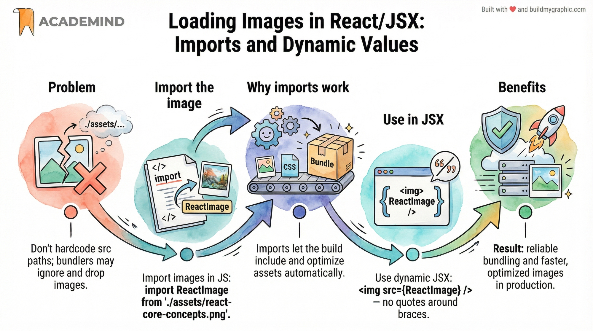
Component Reusability & Props
Props (properties) are the mechanism for passing data from parent to child. They make components configurable and reusable — a single Card component can render different content depending on the props it receives.
Declaring & Using Props
// Reusable component accepting props
function UserCard({ name, role, avatar }) {
return (
<div className="user-card">
<img src={avatar} alt={name} />
<h3>{name}</h3>
<p>{role}</p>
</div>
);
}
// Using it with different data
function App() {
return (
<div>
<UserCard
name="Alice"
role="Engineer"
avatar="/alice.jpg"
/>
<UserCard
name="Bob"
role="Designer"
avatar="/bob.jpg"
/>
</div>
);
}Default Props & Destructuring
// Default values via destructuring
function Button({ label = 'Click', variant = 'primary' }) {
return <button className={`btn btn-${variant}`}>{label}</button>;
}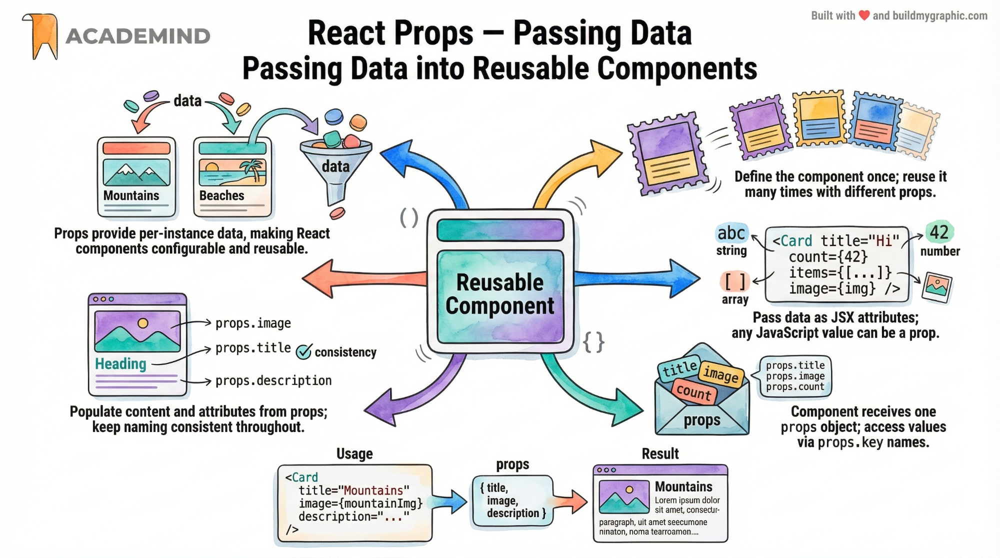
Project Structure & Separate Files
As your app grows, putting every component in App.jsx becomes unmanageable. Moving components into their own files improves organization, enables reuse across projects, and makes team collaboration easier.
Recommended Folder Structure
src/
├── components/
│ ├── Header/
│ │ ├── Header.jsx
│ │ └── Header.css
│ ├── CoreConcept/
│ │ └── CoreConcept.jsx
│ └── TabButton/
│ └── TabButton.jsx
├── assets/
│ └── react-core-concepts.png
├── App.jsx
└── App.cssExporting & Importing
// Header.jsx — default export
export default function Header() {
return <header>…</header>;
}
// App.jsx — importing the component
import Header from './components/Header/Header';
function App() {
return <Header />;
}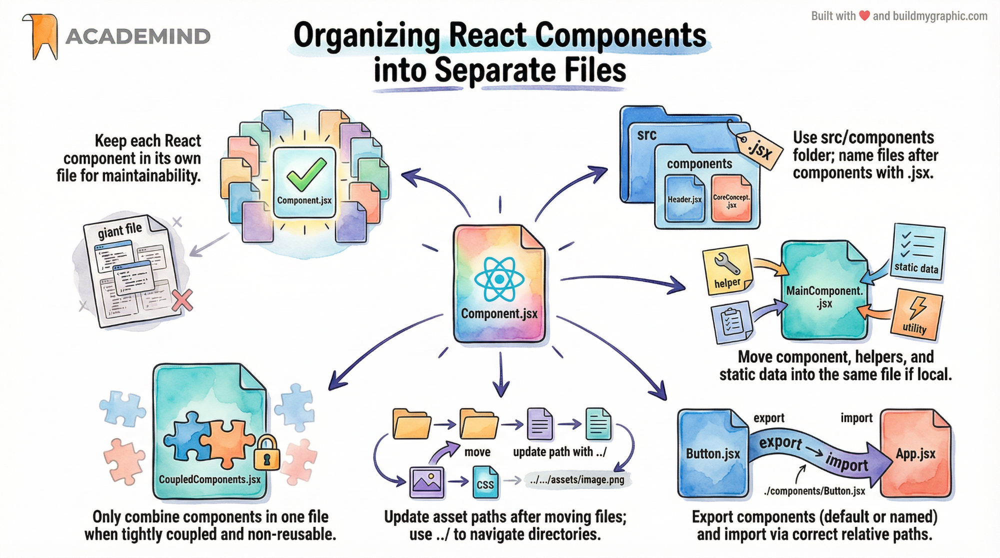
The children Prop
children is a special built-in prop that React automatically passes to every component. It represents whatever you place between the opening and closing tags of a component — making it the primary mechanism for composition.
Why children?
- Creates wrapper / layout components (cards, modals, sections)
- Makes components flexible — they don't need to know what content they'll contain
- Follows the composition pattern instead of prop drilling
// A generic Card wrapper using children
function Card({ children }) {
return (
<div className="card">
{children}
</div>
);
}
// Using it with different inner content
<Card>
<h2>Title</h2>
<p>Description text</p>
</Card>
<Card>
<img src="hero.jpg" alt="Hero" />
</Card>Combining children with other props
function Panel({ title, children }) {
return (
<section className="panel">
<h2>{title}</h2>
{children}
</section>
);
}
// Usage
<Panel title="Settings">
<SettingsForm />
</Panel>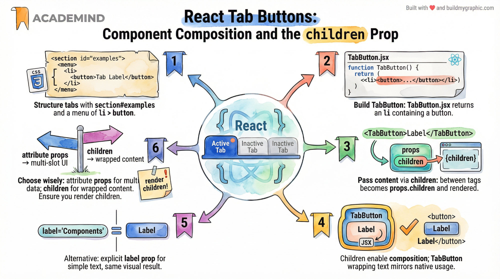
Reacting to Events
React uses synthetic events — cross-browser wrappers around native DOM events. You attach event handlers via camelCase props like onClick, onChange, onSubmit, etc.
Basic Event Handling
function Counter() {
function handleClick() {
console.log('Button clicked!');
}
return <button onClick={handleClick}>Click</button>;
}Accessing the Event Object
function Form() {
function handleChange(event) {
console.log(event.target.value); // current input value
}
return <input onChange={handleChange} />;
}Common Events
- onClick — button/link clicks
- onChange — input/textarea value changes
- onSubmit — form submission
- onMouseEnter / onMouseLeave — hover effects
- onKeyDown / onKeyUp — keyboard input
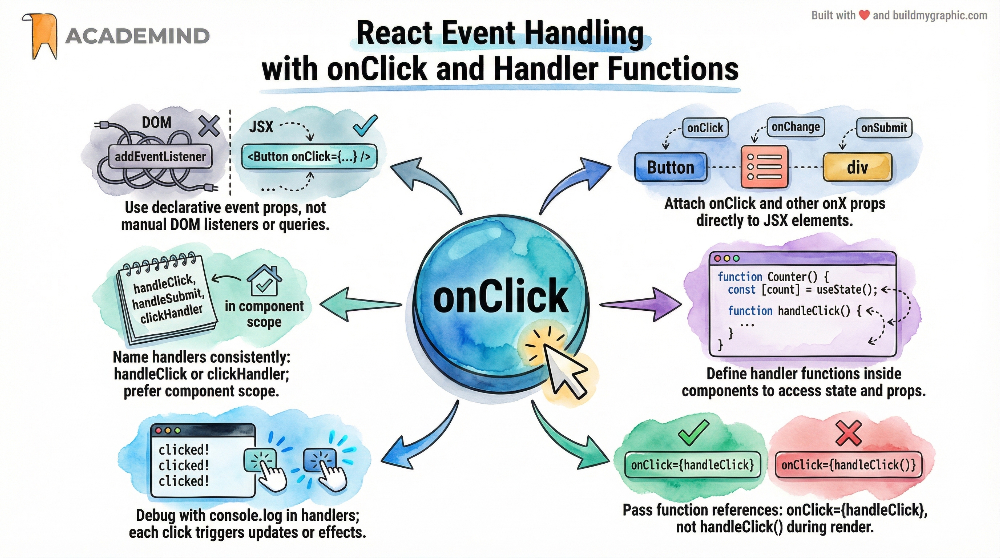
Passing Functions as Props
Functions are first-class citizens in JavaScript, which means you can pass them as props just like any other value. This pattern enables child-to-parent communication — the child calls the function, and the parent handles it.
// Parent defines the handler
function App() {
function handleTabChange(selectedTab) {
console.log('Tab changed to:', selectedTab);
}
return <TabButton onSelect={handleTabChange} />;
}
// Child receives and calls the function
function TabButton({ onSelect }) {
return (
<button onClick={() => onSelect('details')}>
Details
</button>
);
}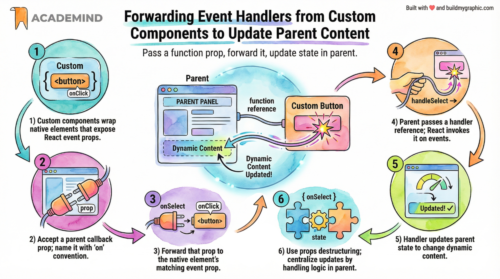
Adding Custom Parameters to Handlers
Often you need to pass extra data to an event handler beyond just the event object. There are several patterns for this, each with different tradeoffs.
Pattern 1: Arrow Function Wrapper
function ProductList() {
function handleSelect(id) {
console.log('Selected:', id);
}
return (
<ul>
<li onClick={() => handleSelect(1)}>Product A</li>
<li onClick={() => handleSelect(2)}>Product B</li>
</ul>
);
}Pattern 2: data-* Attributes
function handleClick(event) {
const id = event.target.dataset.id;
console.log('Selected:', id);
}
<button data-id="42" onClick={handleClick}>Select</button>Pattern 3: via Props (Preferred for Custom Components)
<TabButton
label="Details"
onSelect={() => handleSelect('details')}
/>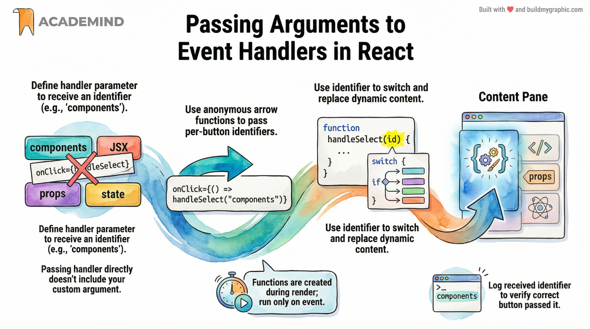
Managing State with useState
useState is the most fundamental React Hook. It lets you add state — data that changes over time and triggers a re-render when updated — to functional components.
Syntax
import { useState } from 'react';
function Counter() {
// [currentValue, setterFunction] = useState(initialValue)
const [count, setCount] = useState(0);
function increment() {
setCount(count + 1);
}
return (
<div>
<p>Count: {count}</p>
<button onClick={increment}>+1</button>
</div>
);
}State with Objects
const [user, setUser] = useState({ name: 'Alice', age: 25 });
// Update: spread existing, then override
setUser({ ...user, age: 26 });Functional Updates
// When new state depends on previous state,
// use the functional update form to avoid stale closures:
setCount((prevCount) => prevCount + 1);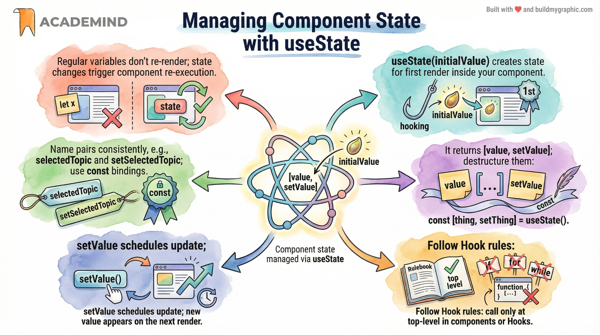
Deriving & Outputting Data Based on State
Not every piece of data needs its own state. When a value can be computed from existing state, derive it instead of storing it separately. This eliminates sync bugs and reduces complexity.
Bad: Redundant State
// ❌ Don't store derived values in state
const [items, setItems] = useState(['A', 'B', 'C']);
const [itemCount, setItemCount] = useState(3); // redundant!Good: Derive from State
// ✅ Derive the count — always in sync
const [items, setItems] = useState(['A', 'B', 'C']);
const itemCount = items.length; // derived!
// More examples of derived data
const [price, setPrice] = useState(100);
const [quantity, setQuantity] = useState(2);
const total = price * quantity; // derived
const [todos, setTodos] = useState([...]);
const completedCount = todos.filter(t => t.done).length;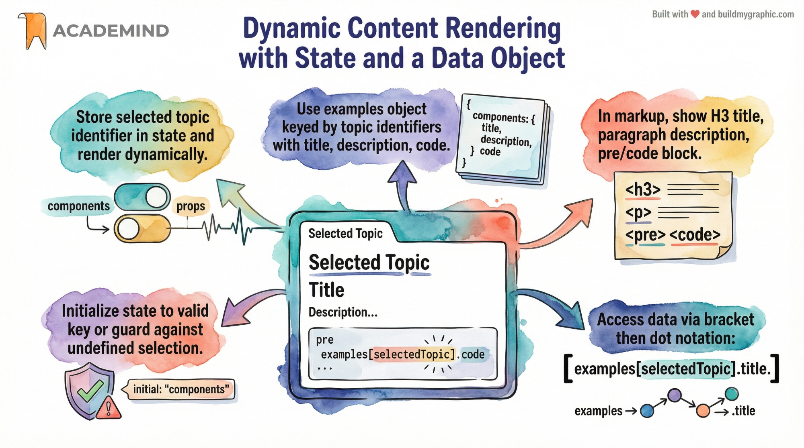
Rendering Content Conditionally
React doesn't have built-in directives like v-if or ngIf. Instead, you use plain JavaScript — ternary operators, logical AND, and early returns — to conditionally render elements.
Method 1: Ternary Operator
function Alert({ message }) {
return (
{message ? <p className="alert">{message}</p> : null}
);
}Method 2: Logical AND (&&)
// Renders the element only if condition is truthy
function Profile({ user }) {
return (
<div>
<h2>{user.name}</h2>
{user.isAdmin && <badge>Admin</badge>}
{user.email && <p>{user.email}</p>}
</div>
);
}Method 3: Early Return
function UserDetails({ user }) {
if (!user) return <p>Loading…</p>;
return <div>…</div>;
}Method 4: Variable Assignment
function TabContent({ activeTab }) {
let content = <p>Please select a tab.</p>;
if (activeTab === 'details') {
content = <DetailsPanel />;
} else if (activeTab === 'settings') {
content = <SettingsPanel />;
}
return <div>{content}</div>;
}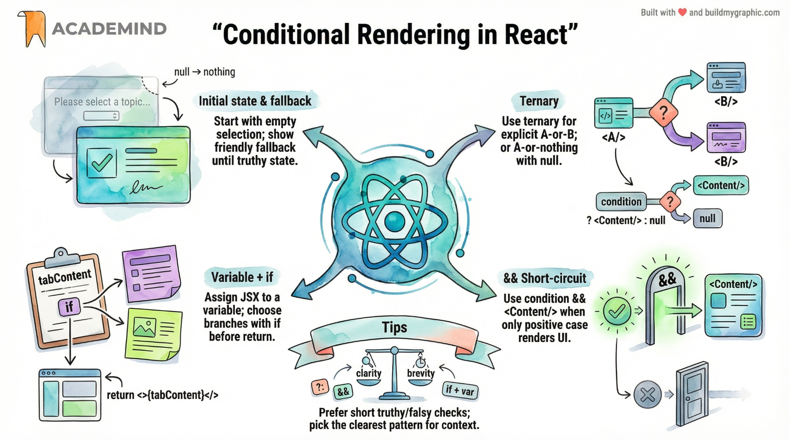
CSS Styling & Dynamic Styling
React supports multiple styling approaches. Choosing the right one depends on project size, team preference, and whether you need dynamic styles.
1. Inline Styles
// Inline styles use camelCase properties and an object
<div style={{
backgroundColor: '#1a1a2e',
padding: '20px',
borderRadius: '8px'
}}>
Content
</div>2. CSS Classes (Traditional)
// Import a CSS file and use className
import './Button.css';
function Button({ variant }) {
return <button className={`btn btn-${variant}`}>Click</button>;
}3. Dynamic className
function Tab({ isActive, children }) {
return (
<button className={isActive ? 'tab active' : 'tab'}>
{children}
</button>
);
}4. CSS Modules
// Button.module.css — scoped by default
import styles from './Button.module.css';
function Button() {
return <button className={styles.primary}>Click</button>;
}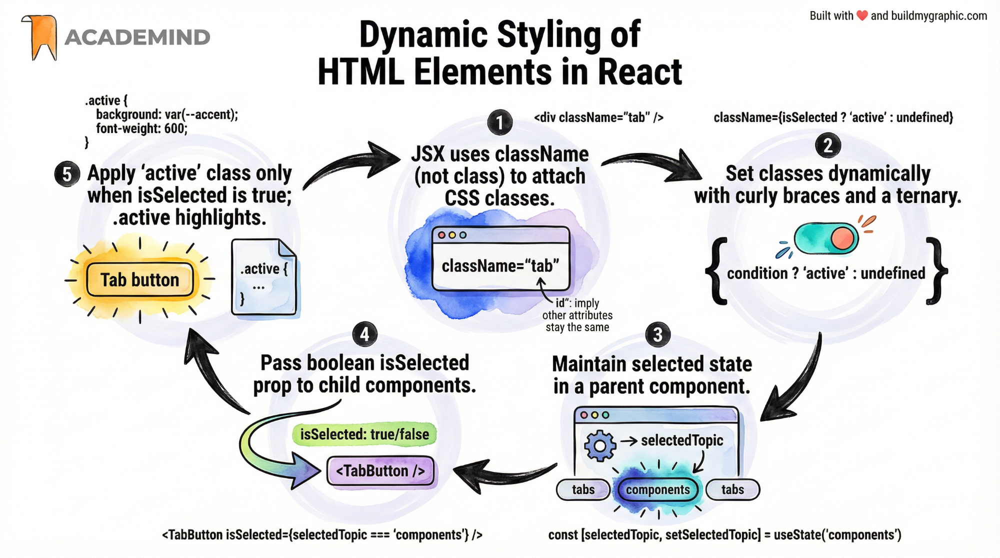
Outputting Lists Dynamically
To render a list of items, use JavaScript's .map() method to transform an array of data into an array of JSX elements. This is the standard React pattern for dynamic lists.
Basic List Rendering
function ConceptList() {
const concepts = [
{ id: 'cmp', title: 'Components', desc: 'UI building blocks' },
{ id: 'jsx', title: 'JSX', desc: 'Declarative syntax' },
{ id: 'props', title: 'Props', desc: 'Data passing' },
];
return (
<ul>
{concepts.map((concept) => (
<li key={concept.id}>
<h3>{concept.title}</h3>
<p>{concept.desc}</p>
</li>
))}
</ul>
);
}Extracting List Items as Components
// Reusable list item component
function ConceptItem({ title, description }) {
return (
<li>
<h3>{title}</h3>
<p>{description}</p>
</li>
);
}
// Parent maps data to components
{concepts.map((c) => (
<ConceptItem
key={c.id}
title={c.title}
description={c.desc}
/>
))}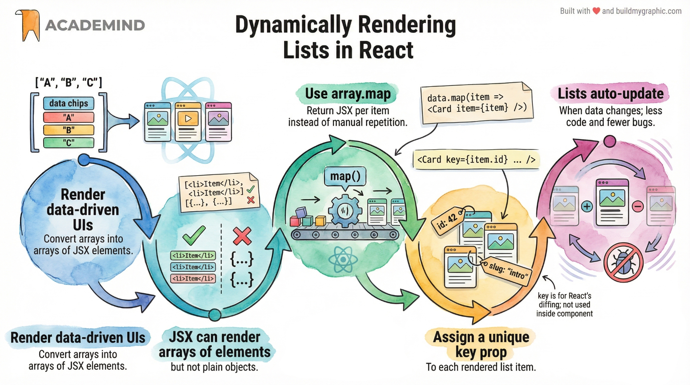
Mini-Project: Interactive Tab Viewer
Let's combine everything we've learned — components, props, state, events, conditional rendering, and dynamic styling — into a single working mini-project: an Interactive Tab Viewer.
Project Overview
The app displays three tabs (Components, JSX, Props). Clicking a tab reveals its description. The active tab is visually highlighted. All logic lives in the parent; child components are pure and reusable.
Project Structure
src/
├── components/
│ ├── TabButton.jsx
│ └── TabContent.jsx
├── App.jsx
└── App.cssTabButton.jsx
export default function TabButton({ children, isSelected, onSelect }) {
return (
<li>
<button
className={isSelected ? 'active' : undefined}
onClick={onSelect}
>
{children}
</button>
</li>
);
}App.jsx
import { useState } from 'react';
import TabButton from './components/TabButton';
const TAB_DATA = {
components: 'Components are the building blocks…',
jsx: 'JSX is a syntax extension for JS…',
props: 'Props let you pass data from parent to child…',
};
export default function App() {
const [selectedTopic, setSelectedTopic] = useState('components');
function handleSelect(topic) {
setSelectedTopic(topic);
}
return (
<div id="app">
<h1>React Essentials</h1>
<menu>
<TabButton
isSelected={selectedTopic === 'components'}
onSelect={() => handleSelect('components')}
>Components</TabButton>
<TabButton
isSelected={selectedTopic === 'jsx'}
onSelect={() => handleSelect('jsx')}
>JSX</TabButton>
<TabButton
isSelected={selectedTopic === 'props'}
onSelect={() => handleSelect('props')}
>Props</TabButton>
</menu>
<div id="tab-content">
{TAB_DATA[selectedTopic]}
</div>
</div>
);
}Key Concepts Applied
Techniques Used in This Project
- Ch 06 Props — isSelected, onSelect, children
- Ch 08 children prop — Tab content passed between tags
- Ch 09 Event handling — onClick on buttons
- Ch 10 Function props — parent handler passed to child
- Ch 11 Custom params — () => handleSelect('jsx')
- Ch 12 State — selectedTopic managed with useState
- Ch 13 Derived data — content looked up from TAB_DATA
- Ch 14 Conditional class — isSelected ? 'active' : undefined
- Ch 15 Dynamic styling — active class toggled
Interview Q&A
Prepare for React interviews with these commonly asked questions covering the essentials covered in this guide.
React Essentials Guide — Dark Premium Edition
Comprehensive coverage of components, JSX, props, state, events, styling, lists, and interview preparation.